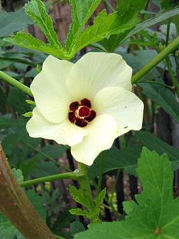
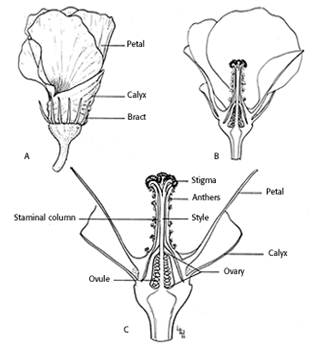
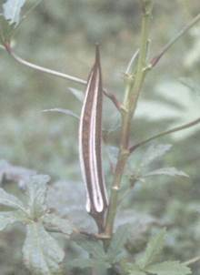
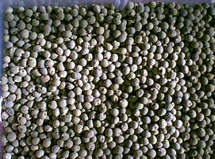
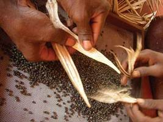
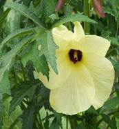
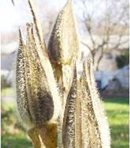
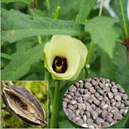
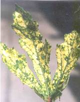

GPBR 112 :: Lecture 20 :: BHENDI (Abelmoschus esculentus)

Botany: Anthesis is between 9 and 10 hr and is preceded by maximum anther dehiscence between 8 and 9 hr. The stigma remains receptive on the day of anthesis. Bhendi is an often cross pollinated crop. Cross pollination to an extent of 12 per cent is due to protogynous.

Method of seed production : Seed to seed
Stages of seed production : Breeder seed à Foundation seed à Certified seed.
Varieties : Co.1, MDU.1, Parbhani Kranti, Arka Anamika, Pusa A‑4, Pusa Sawani
Hybrids:CO2,CO 3, Mahyco hybrid, Shoba
Season : June‑July, September‑ October and February‑ March
Land requirement : Select field on which bhendi crop was not grown in the previous season, unless the crop was of the same variety and certified. Field should be free from wild bhendi (Abelmoschus sp.)
Isolation requirement: Seed field must be isolated from other varieties at least by 400 M for foundation and hybrid seed production and 200 M for certified seed production.
Seed rate : Varieties : 8‑10 kg/ha
Hybrids : 4 kg/ha (Female); 1 kg/ha (Male)
Manuring: Apply 12.5 tons of FYM/ha before ploughing. Apply 150:75:75 kg NPK/ha, of which 50% of the N should be applied as top dressing in two split doses at flowering and 10 days later.
Planting ratio: For hybrid seed production, female and male parents are normally planted in the ratio of 4:1.
Roguing: Minimum of three inspections for varieties and 4 inspections for hybrids, one at vegetative, two at flowering and one at fruit maturity stages. The rouging should be based on the plant characters, hairiness, fruit character like fruit colour, number of ridges, fruit length etc., and the off type and mosaic attacked plants should be removed from the seed field. Wild bhendi if present should be removed before flowering.
Pest and disease management: The major pest attacking bhendi are jassids, aphids and white fly, which can be controlled by spraying Rogar or Dimecron or Endosulphon. The pod borer and red spider mites can be controlled by spraying Endosulphon and Kelthane, respectively. The diseases such as yellow vein mosaic and powdery mildew can be controlled by spraying systemic insecticides and Karathane, respectively.
Hybrid seed production: In bhendi, since the flowers are large in size, hand emasculation and pollination is the best suitable method for seed production. The emasculation and dusting can be done as per the methods outlined in tomato. The male and female parents are raised in blocks at the ratio of 9:1 (Female: Male).
Harvesting: Fruits should be harvested when they have dried (30‑35 days after crossing). The pods which expose hairline crack and turn to brown colour on drying alone are cut using sickle manually.

Threshing:
The pods are dried and threshed using pliable sticks. Separated seeds are winnowed to remove plant debris and dried over a tarpaulin to 10% moisture content. Dried seeds are subject to water floatation in which, good seeds sink while poor seeds float. The floaters are removed, while sinkers are dried under shade followed by sun drying. Then the seed are cleaned, dried and treated with Captan/ Thiram.

Processing: Seeds are to be processed with BSS 7 wiremesh sieve.
Seed Yield: 1000-1200 Kg/ha
Specific standards:
Factors |
Foundation |
Certified |
Off types |
0.1% |
0.2% |
Objectionable weed |
None |
None |
Disease affected plants |
0.1% |
0.5% |
Objectionable weed: wild Abelmoschus sp.

A.moschatus A. manihot

Designated diseases: Yellow Vein Clearing Mosaic (Hybiscus virus‑1)

Seed standards
Factors |
Foundation |
Certified |
Pure seed |
99% |
99% |
Inert matter |
1% |
1% |
Other crop seed |
None |
5/kg |
Total weed seed |
None |
None |
Objectionable weed |
None |
None |
Other Distinguishable Varieties (ODV) |
10/kg |
20/kg |
Germination |
65% |
65% |
Moisture |
10% |
10% |
For VP Container |
8% |
8% |
| Download this lecture as PDF here |